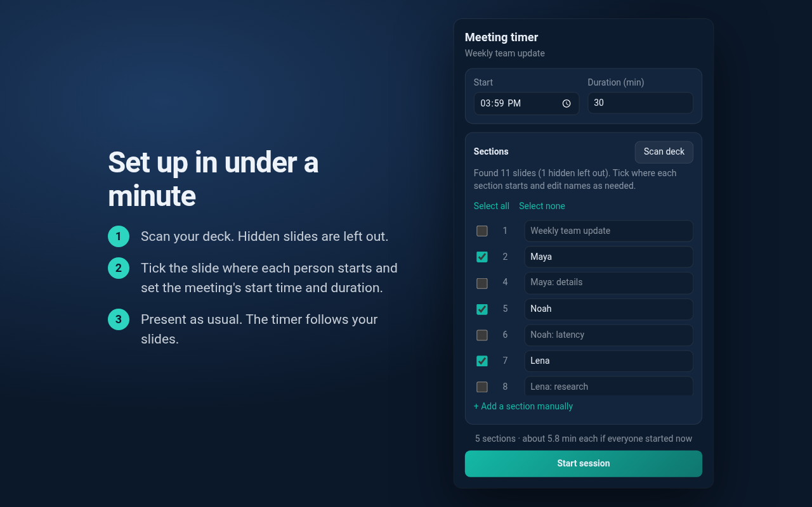
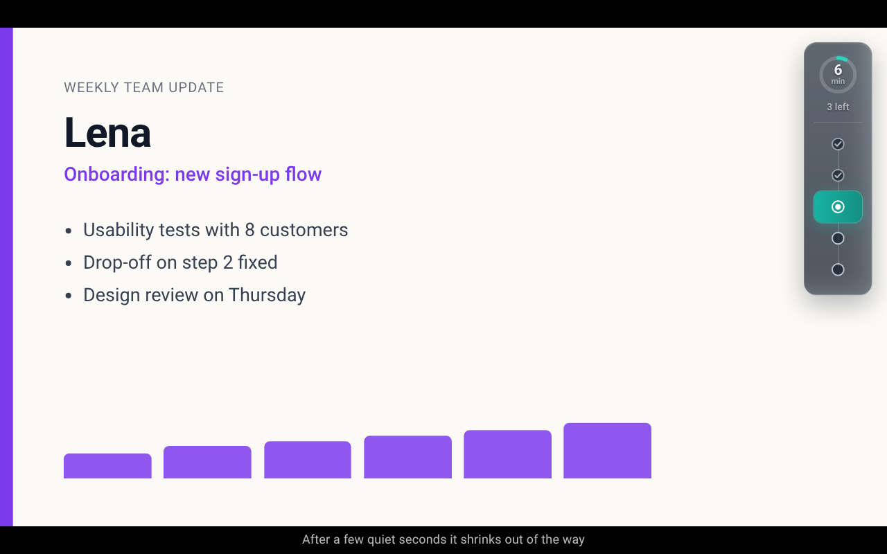

SETUP GUIDE
A Google Slides timer
for speakers and topics.
Multiple speakers or topics, one meeting deadline, and a visible countdown to help everyone see when to move on.
Use desktop Chrome 102 or later. You need access to open a Google Slides presentation. The extension requires no separate account.
1. Install and open your deck
Open your presentation in the Google Slides editor, then click the extension’s toolbar icon. Pin it through Chrome’s Extensions menu if you want easier access.
2. Scan and choose section starts
Click Scan deck. Tick only the first slide of each speaker or topic section. Slides between two checked slides belong to the earlier section. Name sections after the speaker, the agenda item, or both. One speaker can lead multiple topic sections.
Slide titles are inferred from prominent text. Check them before presenting. Scanning normally excludes hidden slides. If Google’s slideshow list cannot be read, hidden slides may remain in the scan.

For a discussion-led meeting, use a title slide for each agenda item and keep the audience-facing slideshow visible. Move to the next marked slide, or use the manual next-section control, when the conversation moves on. The extension follows section controls; it does not listen to the conversation.
3. Set the start time and duration
Set Start and Duration (min), then click Start session. The extension’s toolbar icon displays ON. If you have an untimed opening agenda, start the session just before the first timed presenter.
A section reached before the scheduled start holds its allocation until that start. Allocations use the wall clock, so check the scheduled time rather than assuming Start session resets it.
4. Present and hand over
Open the audience-facing slideshow. Reaching a checked slide starts its section. Moving through detail slides or going back through the deck leaves the current section unchanged. Jumping ahead marks intervening sections as done.
The card shrinks after five seconds without a slide change and expands on the next change. The overlay works in fullscreen and lets presentation clicks pass through.

5. Stop and reuse
Click Stop in the popup to remove the overlay and delete the running session. The deck’s setup remains in local storage. Next week, rescan and adjust the start time. Rescanning matches section selections and edited names by slide ID.
How the time changes
section allocation = (meeting end − now) ÷ sections left
With 22 minutes and five sections left, the first allocation is 4.4 minutes, displayed as “4 min”. If that speaker uses two minutes, the next allocation is 20 ÷ 4 = five minutes. Long sections reduce what remains for later topics or speakers. This does not guarantee equal airtime or stop a discussion.
At the end of a turn, the timer shows amber “Wrap up”. More than a minute over, negative minutes appear in red. It does not stop the slideshow.
Manual controls
| Shortcut | Action |
|---|---|
| Alt+Shift+N | Advance to the next section |
| Alt+Shift+P | Return to the previous section and recalculate the time left |
| Alt+Shift+O | Show or hide the overlay |
The popup offers the same controls. Change key bindings at chrome://extensions/shortcuts.
If something goes wrong
- The popup asks me to open Slides
- Make the Slides editor tab active, then reopen the popup.
- Scan deck fails
- Refresh Slides and retry. If it still fails, use “+ Add a section manually” and the manual section controls.
- The overlay is missing
- Check for the ON badge and try Alt+Shift+O. Use the audience-facing slideshow rather than the speaker-notes window. Refresh Slides after installing or updating the extension.
- The wrong presenter is active
- Check the section-start slides. Use the popup’s Previous section or Next section controls to recover.
Google Slides page changes can affect scanning and detection. Report a problem on GitHub, with a non-sensitive example when possible.